Same Product, New Story
Live PreviewWhat was Missing ?
Any emotional reason to choose this brand over a rival with the same features.
That gap showed up directly in the numbers: in the brand's own GA audit, women made up only 6.4% of tracked traffic but drove nearly 25% of revenue at the highest engagement rate of any segment, the audience, the brand should have been built around was the one it was least deliberately speaking to.
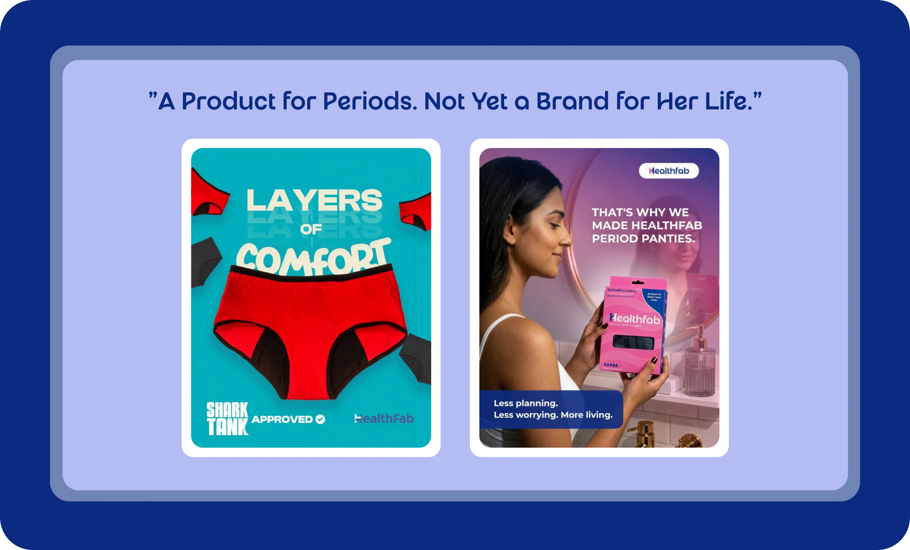
The Thinking Behind It
Before any design work began, the foundation was research: a Google Analytics audit of who was actually buying, a full SWOT, and a teardown of each competitor.
Researching the audience
Nine researched user segments, from college athletes to homemakers buying for daughters, distilled into 4 core personas, giving the rest of the process a real audience to design for.
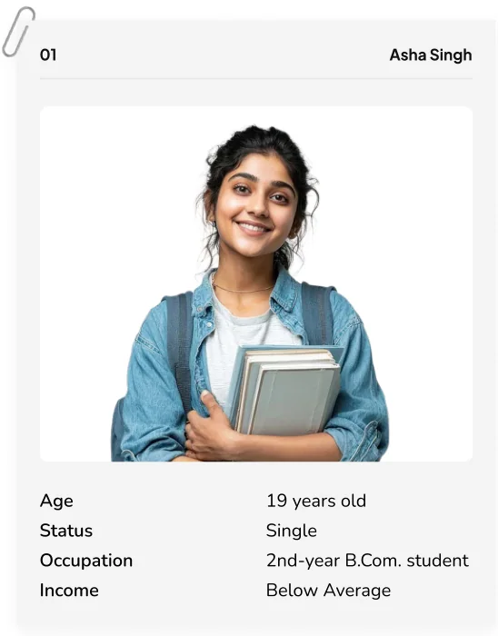
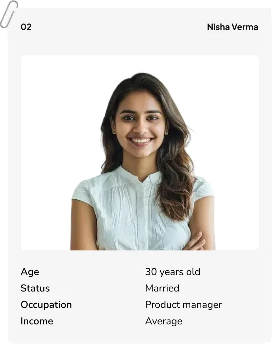
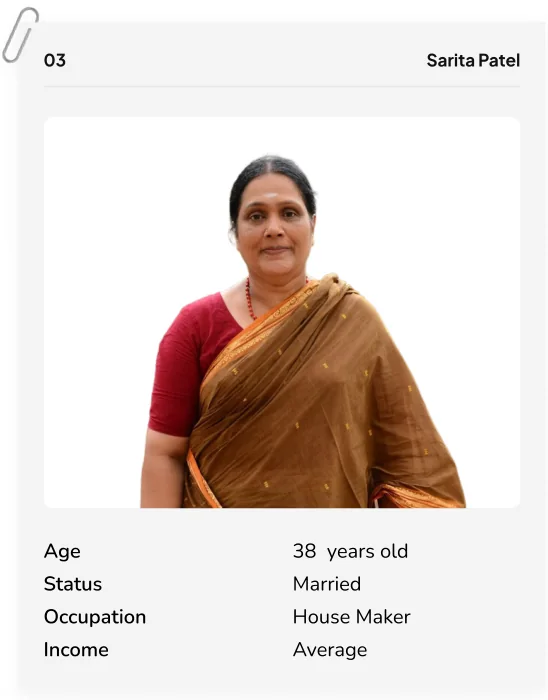
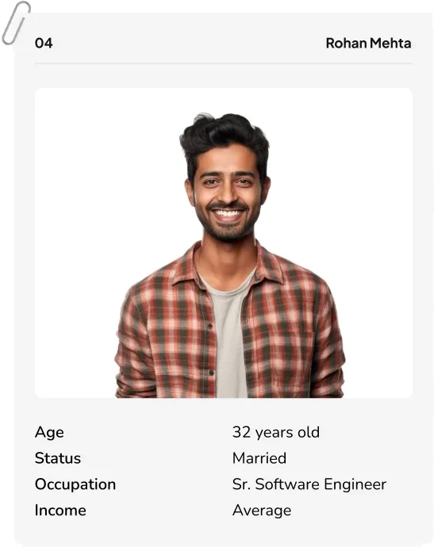
Finding a brand essence that was ours to own
Two directions were developed and tested against the competitive map. "Freedom to Flow" won because no competitor had claimed that emotional territory, and it was the exact language showing up unprompted in persona research ("unstoppable," "all-day armor")
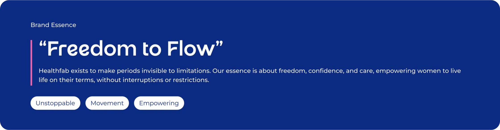
Brand Positioning and tagline
The period-wellness brand for women who refuse to plan their day around their period.
Refining the logo - A story of its own
The logo didn't get thrown out and started from zero. Refining the logo meant keeping the "H" recognizable while giving it new meaning: the mark was reshaped into two interlocking halves - brand and consumer, moving forward side by side, with a flowing curve through the center carrying "freedom" directly into the symbol itself. It's a quiet detail, but it's the one piece of the old identity that had to survive the rebrand, so it had to earn its place rather than just be inherited.
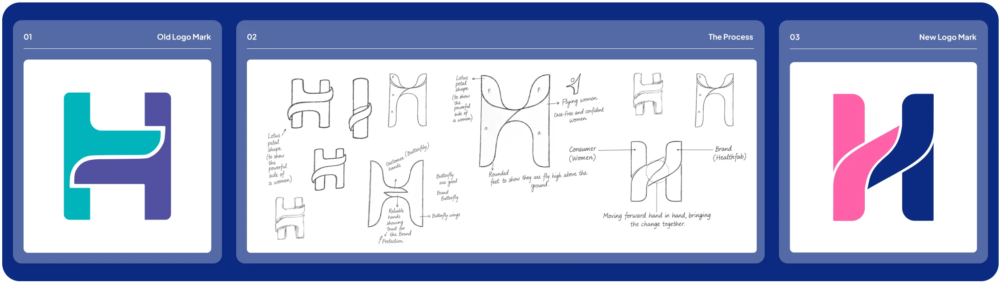
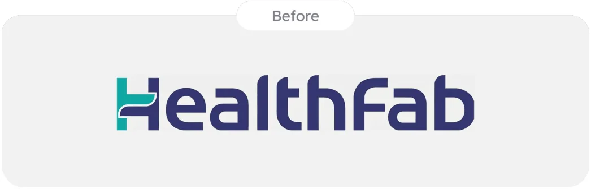
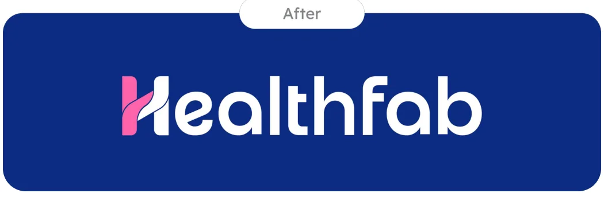
Choosing color through mood, not guesswork
Color came last, and deliberately so, it had to justify itself against everything decided before it, not the other way around. Multiple moodboards were built around the new essence, positioning, and brand story. The direction that held, Dark Blue paired with Hot Pink, was the one that read as "bold but caring" without tipping into either pure clinical trust or pure softness, matching the brand personality.
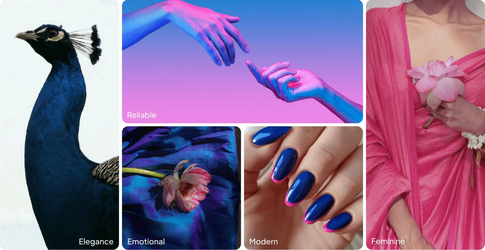
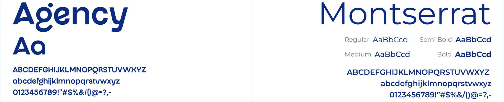
Logo Execution
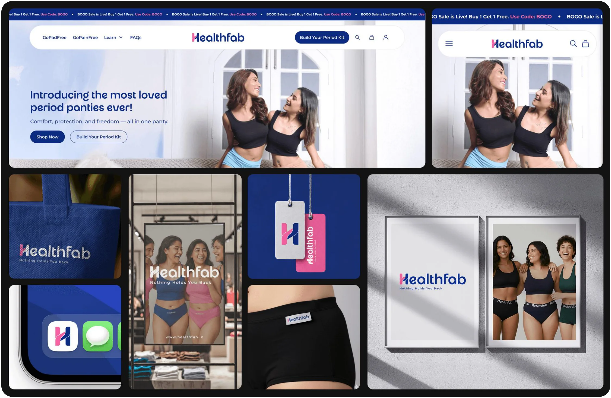
A Fresh Face for the Shelf
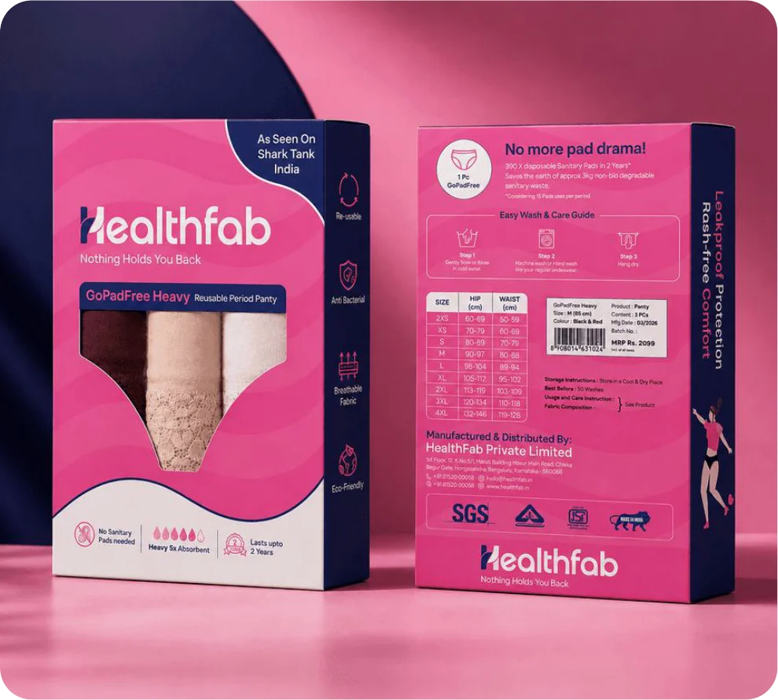
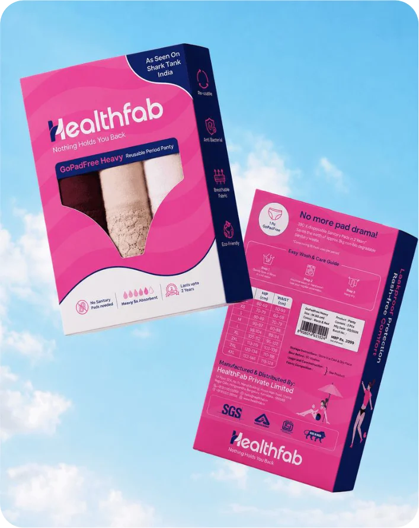
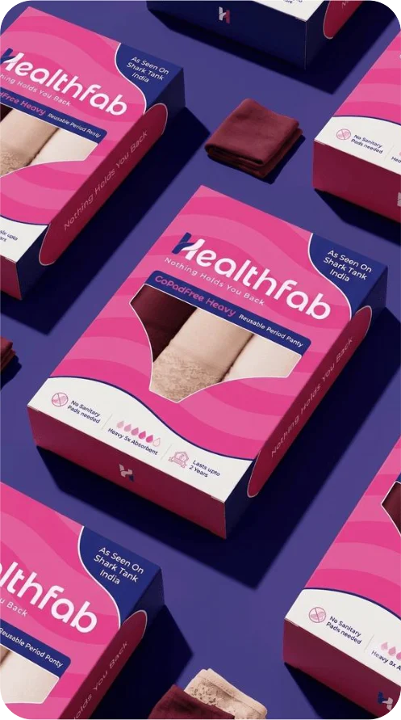
Digital & Social
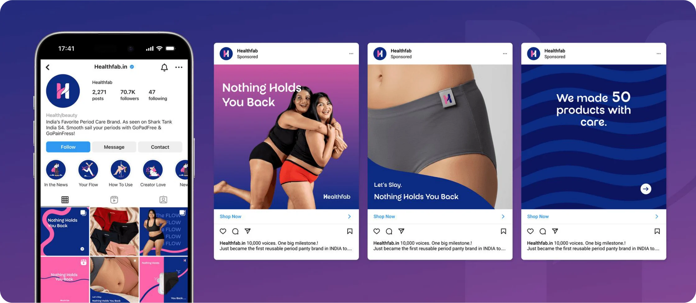
The Closing
This project was never just about a new logo or a new color palette, it was about giving a genuinely strong product the brand it deserved. By starting with research instead of aesthetics, this rebrand built that story from the ground up. The result is a brand built to carry the brand from where it's already trusted into where it wants to be seen.